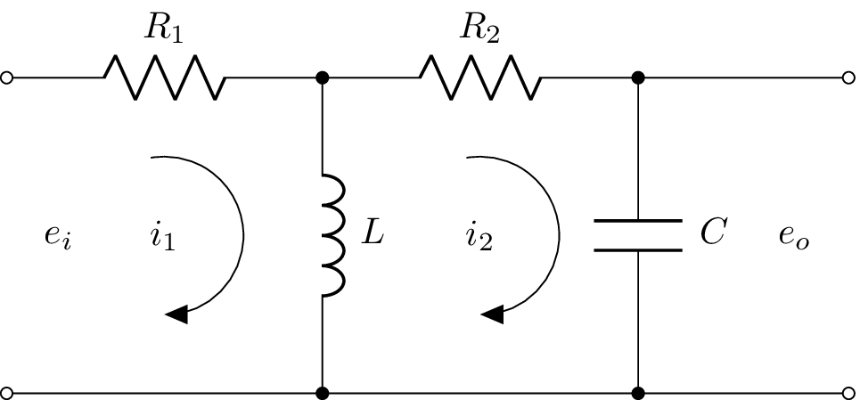

\documentclass{standalone}
\usepackage[american]{circuitikz}
\usepackage{graphicx}
\usepackage{mathrsfs}
\usepackage{latexsym,amssymb,amsmath}
\newcommand{\equal}{=}
\begin{document}
\begin{circuitikz}
%\draw (0,4) to [open,v^>=$v_1(t)$,o-o] (0,0) -- Open Short
\draw (0,3) to [open,l=$e_i$,o-o] (0,0) % input
(0,3) to [R, l^= $R_1$,-*] (3,3) %R1
(3,3) to [L, l^= $L$,-*] (3,0) %C1
(3,3) to [R, l^= $R_2$,-* ] (6,3) %R2
(6,3) to [C, l^= $C$,-*] (6,0) %C2
(8,3) to [open,l_=$e_o$,o-o] (8,0) % output
(0,0) -- (8,0) % wire in bottom
(6,3) -- (8,3) % wire to output
;
% Current flows in tikz
\draw[thin, <-, >=triangle 45] (1.5,1.5) node{$i_1$} ++(-90:0.75) arc (-90:100:0.75);
\draw[thin, <-, >=triangle 45] (4.5,1.5) node{$i_2$} ++(-90:0.75) arc (-90:100:0.75);
% \node (phi) at (4.25,0.5) {$i_2$};
% \draw[-stealth] (4.25,2.5) to [bend left=90] (phi);
\end{circuitikz}
% \begin{circuitikz}
% %\draw (0,4) to [open,v^>=$v_1(t)$,o-o] (0,0) -- Open Short
% \draw (0,4) to [open,l^=$e_1$,o-o] (0,0)
% (0,4) to [R,i>=$\phi_1$, l^= $\mathscr{R}_{1}$,v_>=$\mathscr{F}_1$, color=purple] (4,4)
% (4,0) -- (0,0)
% (4,4) to [R,i^>=$\phi_2$, l^= $\mathscr{R}_{2}$,v_>=$\mathscr{F}_2$, color=blue] (4,0)
% (4,4) to [R,l^= $\mathscr{R}_{3}$,v_>=$\mathscr{F}_3$, color=red] (8,4)
% (8,4) to [R,i^>=$\phi_3$, l^= $\mathscr{R}_{g}$,v_>=$\mathscr{F}_g$, color=cyan] (8,0)
% (8,0) to [R, l^= $\mathscr{R}_{4}$,v_>=$\mathscr{F}_4$, color=green] (4,0);
% \draw[thin, <-, >=triangle 45] (6,2) node{$\phi_3$} ++(-90:1) arc (-90:100:1);
% \draw[thin, <-, >=triangle 45] (2,2) node{$\phi_2$} ++(-90:1) arc (-90:100:1);
%% \node (phi) at (4.25,0.5) {$\phi_2$};
%% \draw[-stealth] (4.25,2.5) to [bend left=90] (phi);
% \end{circuitikz}
\label{fig:q1fig}
\end{document}Created by David Li